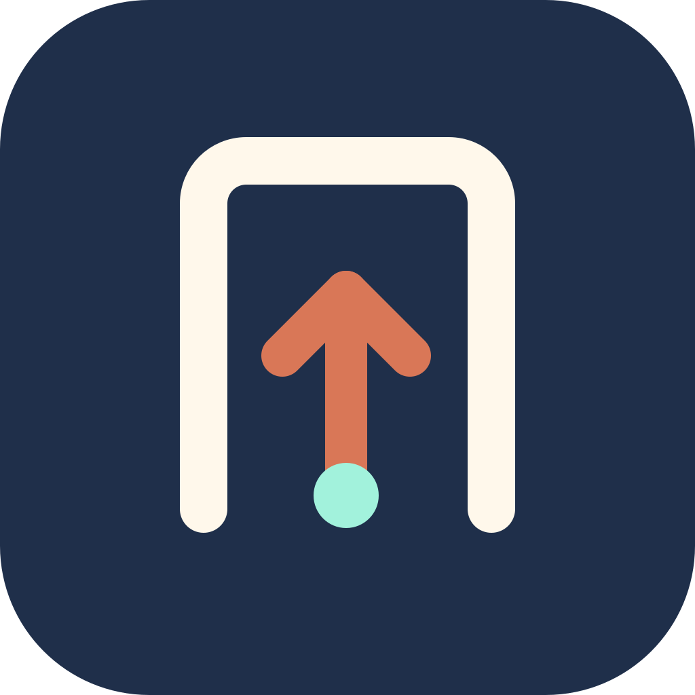
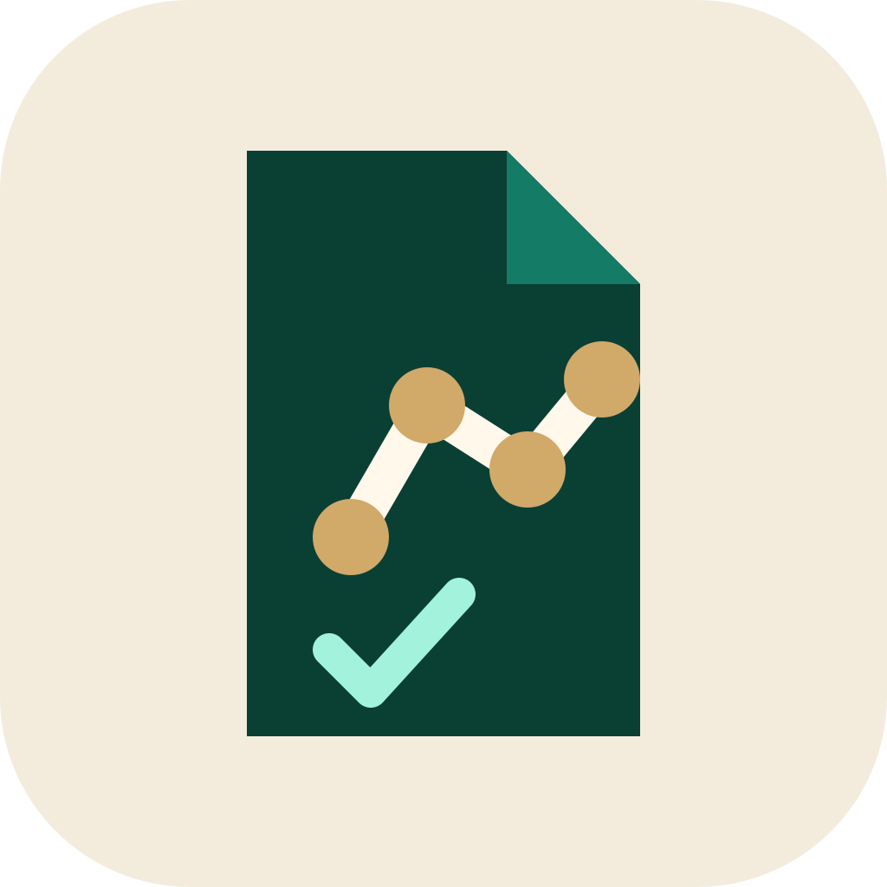
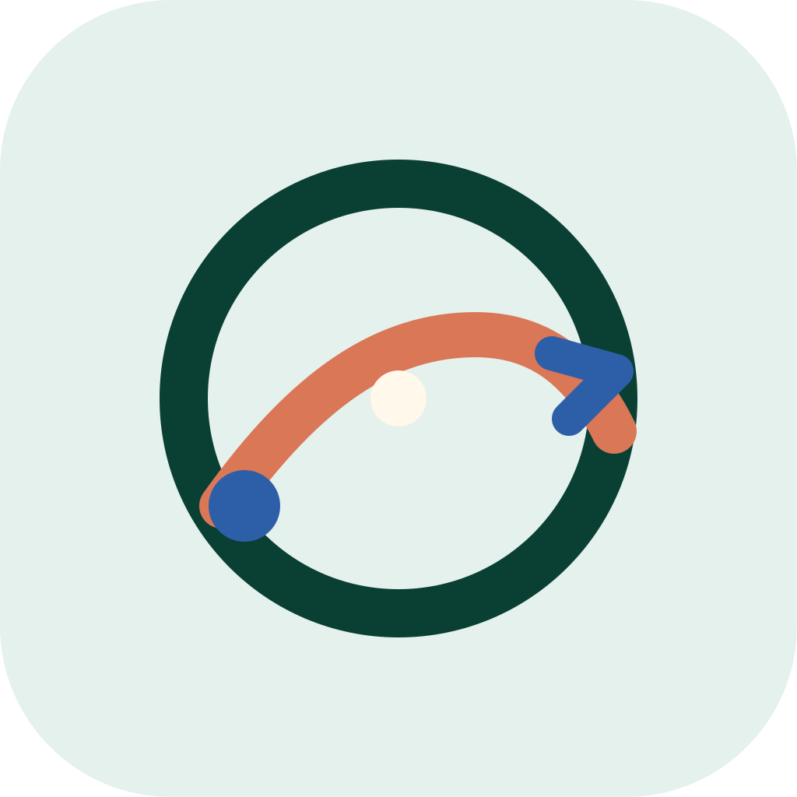

Migration Companion
Four vector directions for a local-first migration information and document workspace.



Four vector directions for a local-first migration information and document workspace.


